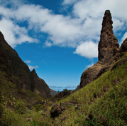
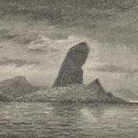
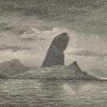

Cape de Verd Islands
Arrival: 1832 January 16th
"It then first dawned on me that I might perhaps write a book on the geology of the various countries visited, and this made me thrill with delight."

Teneriffe, whilst the lower parts were veiled in fleecy clouds. This was the first of many delightful days never to be forgotten. On the 16th of January 1832 we anchored at Porto Praya, in St. Jago, the chief Island of the Cape de Verd archipelago.
 
